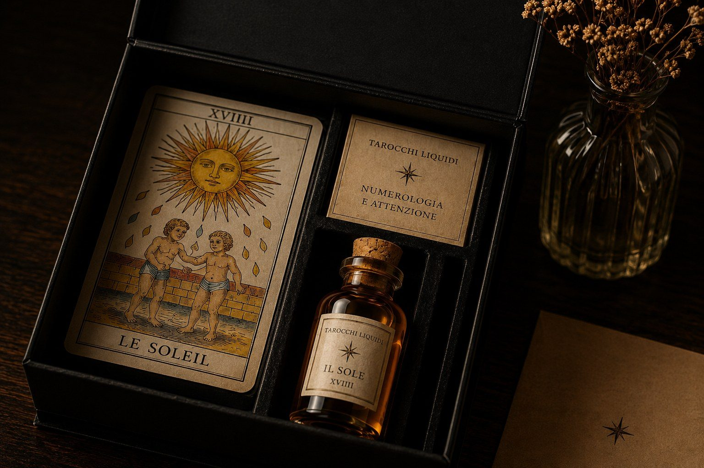

Personale
Ogni incontro parte dalla persona e dalla domanda che porta.
Regalare un’esperienza
Il modo più completo per regalare un incontro Tarocchi Liquidi: un’esperienza personale, curata, da ricordare.
Parliamone su WhatsApp
Per chi è
Il Dono è pensato per compleanni, momenti di cambiamento, nuove partenze, ringraziamenti o occasioni in cui si desidera offrire qualcosa di più personale di un oggetto.
In sintesi
Ogni incontro parte dalla persona e dalla domanda che porta.
La forma del dono è curata, sobria e memorabile.
La Traccia permette di conservare l’esperienza anche dopo il consulto.
Pagina pensata per chi cerca un regalo originale a Roma, un voucher esperienziale, un consulto con Tarocchi di Marsiglia da regalare o un’idea regalo elegante.
Prossimo passo
Scrivimi su WhatsApp: bastano poche righe per capire se questa esperienza è adatta alla tua situazione.
Parliamone su WhatsApp